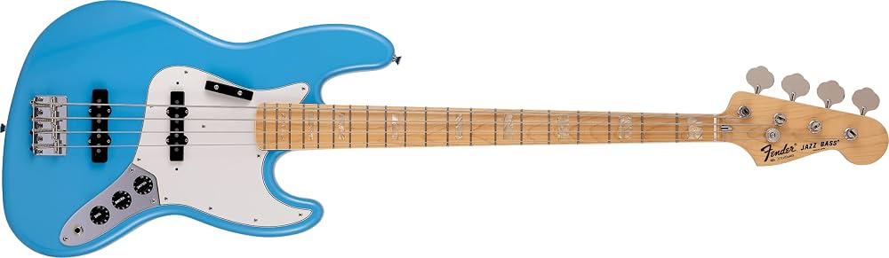
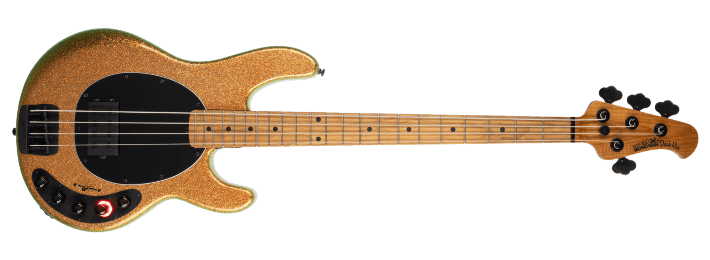
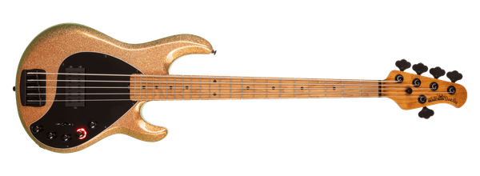
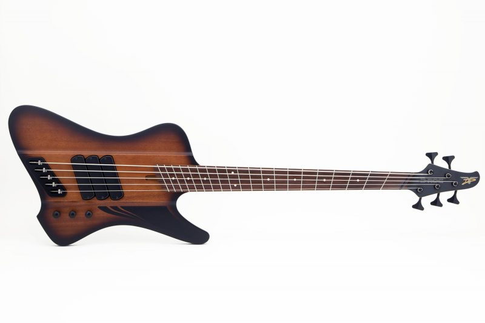

Fender Jazz Bass Made in Japan Limited International Color — Maui Blue
Basato sulla serie Made in Japan Traditional, questo Jazz Bass in edizione limitata
nella finitura Maui Blue riprende la serie americana dei primi anni Ottanta. Le finiture prendono il nome da città del mondo,
mentre ponte e meccaniche in stile vintage richiamano la tradizione Fender.

Music Man DarkRay 4 — Gold Bar
Nella finitura Gold Bar, questo basso a quattro corde nasce dalla collaborazione con
Darkglass Electronics. Il preamplificatore a due bande offre le modalità Clean, Alpha
(distorsione) e Omega (fuzz), con controlli di gain e blend. Completano lo strumento un
pickup humbucker al neodimio e un manico in acero torrefatto.

Music Man DarkRay 5 — Gold Bar
Il DarkRay a cinque corde in finitura Gold Bar abbina un pickup humbucker al neodimio al
preamplificatore Darkglass a due bande, con suoni puliti, distorsione Alpha e fuzz Omega. Il
manico in acero torrefatto, la tastiera in acero e i 22 tasti in acciaio inossidabile
completano la dotazione.

Dingwall D-Roc 5 — Matte Vintage Burst
Questo basso a cinque corde in finitura Matte Vintage Burst adotta una scala multipla da 34 a
37 pollici. Il corpo in khaya si abbina a un manico in acero a cinque pezzi e a una tastiera
in pau ferro. Tre pickup passivi FD3n al neodimio e il selettore Quad-Tone a quattro
posizioni offrono diverse combinazioni sonore.